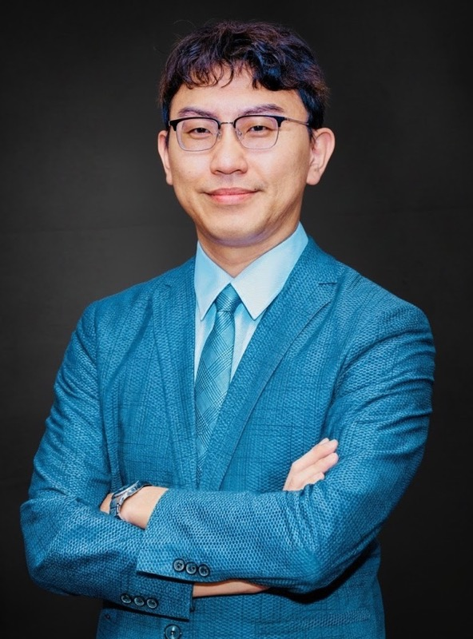
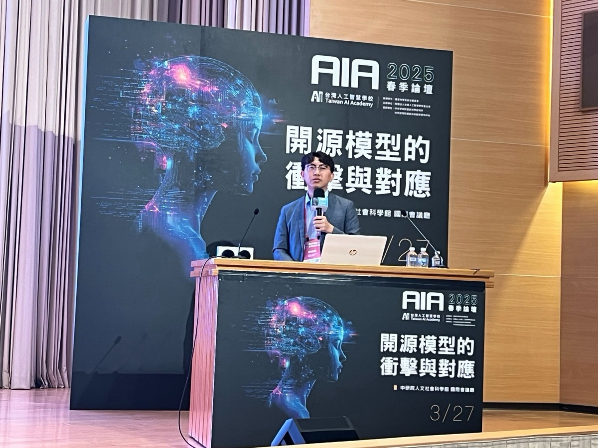
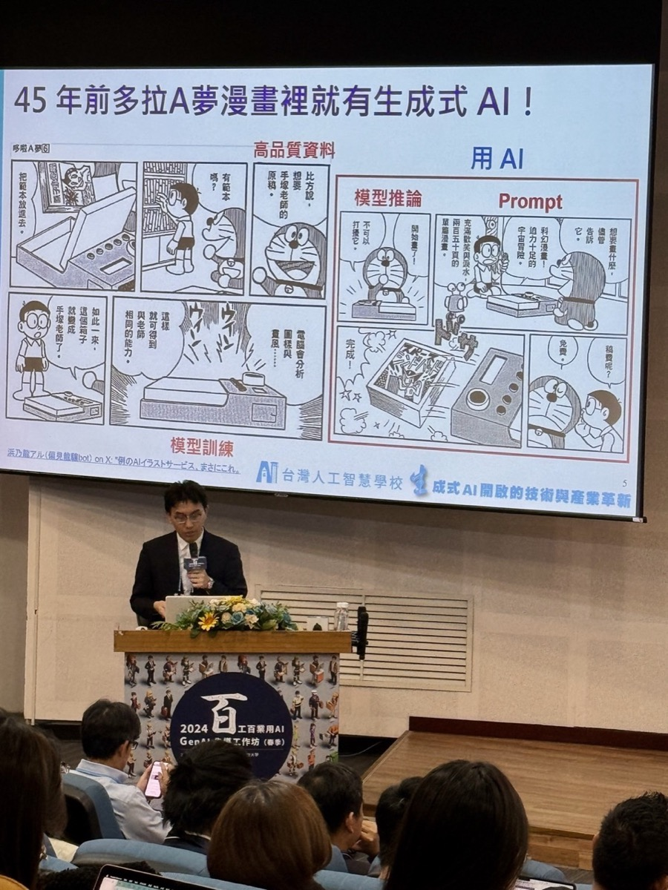
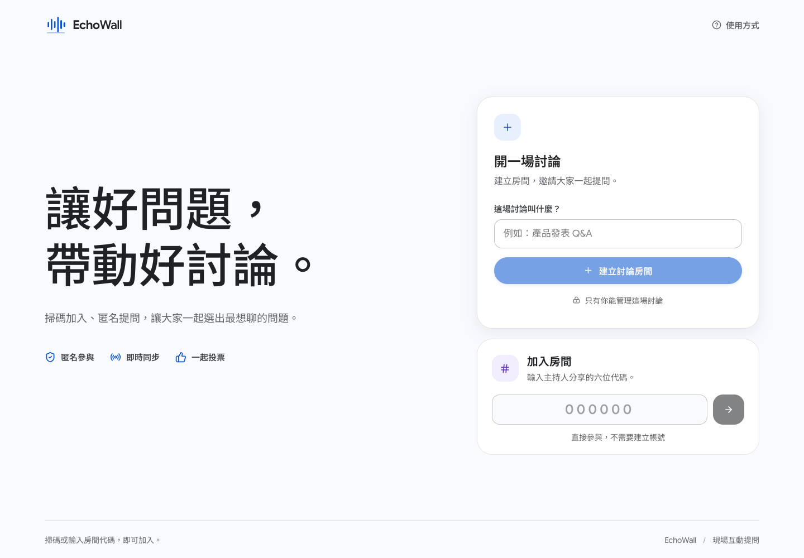
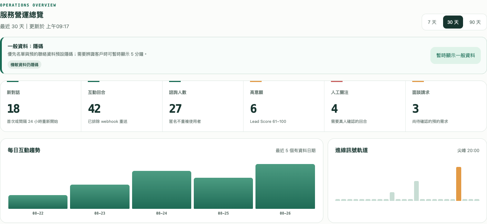

從理解趨勢，
到判斷應用方向。
以企業工作情境為起點，連結生成式 AI 的能力、限制與導入方法。
- 玉山金控AI 主管培育、GCP Conversational Agents 與 Agentspace
- 政大 EMBA 華山論劍社2025 年 AI 系列課程，連結管理與工作應用
- 遠東集團AIGC 專班與生成式 AI 趨勢分享
AI Agent · Enterprise solutions
讓 AI Agent，走進真實工作。
設計能運用知識、串接工具的 AI Agent，
也讓團隊學會把 AI 用在自己的工作裡。

把技術做進流程，把能力留在團隊。
關於政霖
真正有用的 AI，始於一個被重新定義的問題。
我在工程與組織之間工作。先理解人如何做事、流程在哪裡卡住，再把合適的 AI 能力放進去——從輕量的工作流程改造，到 RAG、Agentic Workflow 與可操作的原型。
從 Agentic AI 與 RAG，到 GCP、Okta 與 Microsoft 365 的企業整合，我重視技術、權限與資料邊界，也重視讓方法真正留在團隊裡。
專業領域
從方向判斷到落地原型，每一步都從真實的工作情境出發。
把散落的企業知識，變成查得到依據的回答。
設計目標：讓答案有來源，讓使用者能判斷。
盤點高價值情境、資料條件與導入風險，讓團隊先知道該從哪裡開始，以及如何負責任地推進。
情境排序 / 準備度評估 / 治理原則和實際使用者一起拆解工作、重組人與 AI 的分工，讓新流程能融入日常，而不只是多一個工具。
流程拆解 / 人機協作 / 工作坊共創把知識檢索、任務規劃與工具使用組成可驗證的原型，快速看見能力邊界與下一步所需。
RAG / Agentic Workflow / 可用性驗證以實作和具體任務帶領團隊練習，培養能持續探索、判斷與改善 AI 工作方式的能力。
主管培育 / 情境實作 / 內部能力建立教學與企業內訓
從主管的決策視角，到工程師的實作現場；依角色與產業，把技術轉成可以練習、討論與採用的方法。
數據依原站累積紀錄（2026/11/04 讀取），非即時統計；人次不等於不重複參與人數。查看原站紀錄
以企業工作情境為起點，連結生成式 AI 的能力、限制與導入方法。
用課程與練習拆解 LLM、RAG、AI Agent 與自動化，讓不同背景的人能開始動手。
依部門、職能與產業調整內容，讓學習貼近參與者真正處理的任務。
依 LinkedIn 公開分享，所設計的大型語言模型進階課程獲馬來西亞 AI Nusantara 採用，並協助 30 位大學教授來台進行四天種子師資培訓。
查看專業介紹以上為本人原站與公開專業介紹所列授課經歷，不代表相關機構推薦或背書。
授課現場
企業培訓與公開分享，讓 AI 從概念回到每個人的工作現場。

SHARING IDEAS, IN THE OPENFIELD NOTE 01從模型趨勢到實際應用，將快速變動的技術轉化為能討論、能嘗試的共同語言。

LEARN BY MAKINGFIELD NOTE 02以具體情境進行演練，讓參與者親手體驗生成式 AI 如何改變工作步驟與成果。
產品與專案
從現場互動到 LINE 客服與客戶關係管理，以真實使用情境為起點，設計可以體驗、理解與持續發展的工具。

為演講、教學與工作坊設計的即時問答工具。連結主持人、聽眾與投影畫面，讓問題、支持與討論在同一個現場流動。
圖文介紹與使用手冊
整合 LINE 對話、知識問答、真人接手與 CRM 看板，協助服務團隊整理客戶需求、追蹤待辦與掌握互動趨勢。
圖文介紹與使用手冊一起聊聊
如果你正在思考 AI 如何進入團隊與日常工作，
歡迎從一次對話開始。